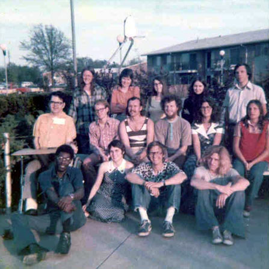
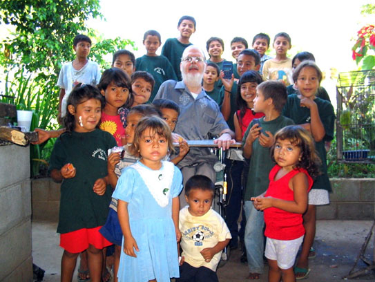

|
|  |
 |
| With Bahá'ís in Illinois |
With kids just outside Zaragoza, ES |
| Con Bahá'ís en Illinois |
Con niños a las afueras de Zaragoza, ES |
| This is the group of Bahá'ís where my dad first heard about the Bahá'í Faith. He became a Bahá'í in Illinois in 1972. After my mom also became a Bahá'í, I was born a Bahá'í and have been happy ever since. I am so glad he gave me this gift. My mom also has a little house outside of the small village of Zaragoza. There are many little kids that live nearby. One day, my dad decided to teach them some math. |
| Este es el grupo de Bahá'ís donde mi papá aprendió sobre la Fe Bahá'í. El se hizo Bahá'í en Illinois en 1972. Después de que mi mamá se hizo Bahá'í, yo naci adentro de la comunidad y he sido muy feliz desde entonces. Me hace bien feliz de que él me haya dado este regalo. My mama tiene una casita en as afueras de la pequeña ciudad de Zaragoza. Hay muchos niños que viven alli cerca. Un día, mi papa quiso ir a enseñarles un poco de matemáticas. |
|
|